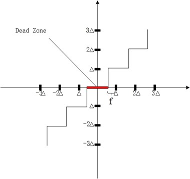

H.264 Quantizer
一般的量化器，可用下面的公式来表示：
$Z=\pm \left \lfloor\frac{ \left | W \right | }{\bigtriangleup }\right \rfloor$
反量化可表示为：
$W’ = \bigtriangleup \cdot Z$
量化步长$\bigtriangleup$决定了量化器的编码压缩率与图像精度。如果$\bigtriangleup$比较大，相应的编码长度较小，图像细节损失较多；如果$\bigtriangleup$比较小，相应的编码长度较大，图像损失细节较少。编码器需根据实际图像来改变$\bigtriangleup$值。
Quantization Offset
可以看到，这种量化器是求下整，也就是会把区间$[0,\bigtriangleup)$的值量化成0。这种量化器显然不是最优的，最优的量化器在某区间上的量化值应该为该区间的期望值。为此需要知道残差变换系数的统计分布，这个分布是经过统计实验得出来的，其中帧间比帧内分布得更为集中。
为了表明分布集中于区间的期望值，引入了参数——offset（量化偏移量）$f$。相应的量化公式变为：
$Z=\pm \left \lfloor\frac{ \left | W \right | + f }{\bigtriangleup }\right \rfloor$
反量化保持不变:
$W’ =\pm (\bigtriangleup \cdot Z)$
H.264参考模型建议：当帧内预测时$f = \bigtriangleup/3$，帧间预测时$f = \bigtriangleup/6$。
另外参数$f$可以控制量化死区（量化后为0区域）大小。

当$f$变大时，量化死区减少；当$f$变小时，量化死区增加。死区大小可以直接影响到视频图像的主观质量。变换后，图像高频部分的数值比较小，也就是说离0值比较接近。如果死区比较大，0值附近的值会被量化为0，则图像会损失这些细节。这个特性在电影中特别有用：在电影胶片上会随机分布着一些斑点，这些斑点是胶片化学物质的结晶体，由于这些斑点与视频的内容在时间、空间上的不相关性，其值没法在预测模块中预测到。因此这些斑点表现为变换后的一些小的高频系数。为了消除这些斑点，可取较小的$f$值，这样量化死区就会较大。在字幕区域的细节比较多，可对字幕区域取比较大的$f$值。
从上方的例子可以看出，死区特征的应用是与应用直接相关的，最好能根据不同的应用相应加以调整。
我们注意到通过参数$f$可以控制量化区间的偏移，以及控制死区大小。两者耦合在一起了。JVT-K026有个直接的解耦方法：加入一个新的参数$\Theta$来控制量化死区的大小，并将量化公式修改为：
$ Z=\pm \left \lfloor\frac{ \left | W \right | + \Theta + f }{\bigtriangleup }\right \rfloor $
$ W’ = \pm (\bigtriangleup \cdot Z - \Theta) $
但是这种方法并没有被标准采用。
Quantization Step
H．264标准共设计了52个不同的量化步长$Q_{step}$，如下表所示，其中QP是量化参数，也就是量化步长的序号。QP由小变大，意味着量化步长的增大，也就是由精细变粗糙。
$Q_{step}$变化有明显的规律：QP每增加1，量化步长就增加12.25%（即$\sqrt[6]{2}-1$）;QP每增加6，量化步长就增加一倍，即$Q_{step}(QP+6) = 2Q_{step}(QP)$。这样做就可以显著减少量化表与反量化表的大小，仅用0~5这6个QP的$Q_{step}$，通过右移就可以得到剩下所有的$Q_{step}$，即$Q_{step}(QP) = Q_{step}(QP%6) \cdot 2^{QP/6}$。
在讲述变换的时候说过，变换的$\bigotimes$运算矩阵$E_f$可以合并到量化表中。下面来看一下该运算矩阵
$ E_f[i][j] = \begin{bmatrix} a^2 & \frac{1}{2}ab & a^2 & \frac{1}{2}ab\ \frac{1}{2}ab & \frac{1}{4}b^2 & \frac{1}{2}ab & \frac{1}{4}b^2\ a^2 & \frac{1}{2}ab & a^2 & \frac{1}{2}ab\ \frac{1}{2}ab & \frac{1}{4}b^2 & \frac{1}{2}ab & \frac{1}{4}b^2 \end{bmatrix}$
得到量化矩阵所进行的合并运算如下(归一化为$2^{15}$)
$\begin{align*}Q(QP,i,j) &= \frac{E_f[i][j]}{Q_{step}(QP)}\times 2^{15+QP/6} \ &= \frac{E_f[i][j]}{Q_{step}(QP%6)\times 2^{QP/6}} \times 2^{15+QP/6} \ &= \frac{E_f[i][j]}{Q_{step}(QP%6)} \cdot 2^{15}\end{align*}$
上式表明$Q(QP,i,j) = Q(QP%6,i,j)$
以$Q(0,0,0) $为例，
$\begin{align*}Q(0,0,0) &= \frac{a^2}{Q_{step}(QP)} \times 2^{15} \ &= \frac{0.25}{0.625}\times 2^{15} \ &= 13107 \end{align*}$
把0~5这6个QP的$Q_{step}$分别与$\bigotimes$运算矩阵$E_f$合并后，可以得到以下6个矩阵，即$Q(QP%6,i,j)$
$Q(0,i,j) = \begin{bmatrix}13107 & 8066&13107& 8066\ 8066& 5243& 8066& 5243\13107& 8066&13107& 8066\ 8066& 5243& 8066& 5243 \end{bmatrix}$
$Q(1,i,j) =\begin{bmatrix}11916& 7490&11916& 7490\ 7490& 4660& 7490& 4660\11916& 7490&11916& 7490\ 7490& 4660& 7490& 4660\end{bmatrix}$
$Q(2,i,j)= \begin{bmatrix}10082& 6554&10082& 6554\ 6554& 4194& 6554& 4194\10082& 6554&10082& 6554\ 6554& 4194& 6554& 4194\end{bmatrix}$
$Q(3,i,j) =\begin{bmatrix} 9362& 5825& 9362& 5825\ 5825& 3647& 5825& 3647\ 9362& 5825& 9362& 5825\ 5825& 3647& 5825& 3647\end{bmatrix} $
$Q(4,i,j) =\begin{bmatrix} 8192& 5243& 8192& 5243\ 5243& 3355& 5243& 3355\ 8192& 5243& 8192& 5243\ 5243& 3355& 5243& 3355\end{bmatrix} $
$Q(5,i,j) =\begin{bmatrix} 7282& 4559& 7282& 4559\ 4559& 2893& 4559& 2893\ 7282& 4559& 7282& 4559\ 4559& 2893& 4559& 2893\end{bmatrix}$
在$E_f$矩阵中，可以看到里面有3个数值$a^2, ab, b^2$，合并到量化矩阵后，就有$3 \times 52 = 156$个参数。采用了上面的QP每增加6，量化步长增加一倍的方法后，参数就只有$3 \times 6 = 18$个参数：
$QuantMatrix[6][3] = \begin{bmatrix}13107 & 5243 & 8066 \11916 & 4660 & 7490 \10082 & 4194 & 6554 \9362 & 3647 & 5825 \8192 & 3355 & 5243 \7282 & 2893 & 4559\end{bmatrix}$
采用量化矩阵的方式后，4x4整数DCT变换的量化公式为
$\begin{align*}Z_{ij} &= \frac{Y_{ij}\bigotimes E_f[i][j] + f’}{Q_{step}(QP)} \ &= \frac{Y_{ij}\bigotimes E_f[i][j] + f}{Q_{step}(QP%6)} \div 2^{QP/6} \ &= Y_{ij}\bigotimes Q(QP%6,i,j) \div 2^{15+QP/6}\end{align*}$
同样道理，逆量化矩阵为(归一化为$2^{10}$)：
$\begin{align*}R(QP,i,j) &= E^R_f[i][j] \times Q_{step}(QP) \times 2^{10-QP/6} \ &= E^R_f[i][j] \times Q_{step}(QP%6) \times 2^{QP/6} \times 2^{10-QP/6} \ &= E^R_f[i][j] \times Q_{step}(QP%6) \times 2^{10}\end{align*}$
上式表明$R(QP,i,j) = R(QP%6,i,j)$
逆量化公式为：
$\begin{align*}Y’{ij} &= Z{ij}\bigotimes E^R_f[i][j] \times Q_{step} \&= Z_{ij} \bigotimes R(QP%6,i,j) \div {2^{10-QP/6}}\end{align*}$
逆量化矩阵为
$dequantMat[6][3]= \begin{bmatrix} 160 & 256 & 208\ 176 & 288 & 224\ 208 & 320 & 256\224 & 368 & 288\ 256 & 400 & 320\ 288 & 464 & 368\end{bmatrix}$
Nonuniformity Quantization
非一致性量化就是4x4或8x8矩阵上各个位置的量化权重不同，通过这种方法可以在进行量化之前调整量化步长，得到更适合人类视觉系统，更真实的图像。
加入权重矩阵$W_{ij}$后，量化矩阵与逆量化矩阵分别为：
$Q(QP,i,j) = \frac{1}{W_{ij}}\cdot \frac{E_f[i][j]}{Q_{step}(QP%6)}\times 2^{15+QP/6}$
$ R(QP,i,j) = W_{ij} \cdot E^R_f[i][j] \times Q_{step}(QP%6) \times 2^{10-QP/6}$
其中$W_{ij}$会被归一为16，即$2<<4$
JM18.6参考代码如下
量化矩阵：
 /*!
/*!
- \brief
- For calculating the quantisation values at frame level
- \par Input:
- none
- \par Output:
- none
*************************************************************************/voidCalculateQuant4x4Param(VideoParameters p_Vid)
{
QuantParametersp_Quant = p_Vid->p_Quant;
ScaleParameters*p_QScale = p_Vid->p_QScale;
pic_parameter_set_rbsp_tactive_pps = p_Vid->active_pps;
seq_parameter_set_rbsp_tactive_sps = p_Vid->active_sps;inti, j, k, temp;intk_mod;intpresent[6];intno_q_matrix=FALSE;//FALSE means donot use default quant ,use weight qp on config files (quantMat << 4 / weight)intmax_bitdepth = imax(p_Vid->bitdepth_luma, p_Vid->bitdepth_chroma);intmax_qp = (3+6*(max_bitdepth));if(!active_sps->seq_scaling_matrix_present_flag && !active_pps->pic_scaling_matrix_present_flag)//set to no q-matrixno_q_matrix=TRUE;else{
memset(present,0,6*sizeof(int));if(active_sps->seq_scaling_matrix_present_flag)for(i=0; i<6; i++)
present[i]= active_sps->seq_scaling_list_present_flag[i];if(active_pps->pic_scaling_matrix_present_flag)for(i=0; i<6; i++)
{if((i==0) || (i==3))
present[i]|= active_pps->pic_scaling_list_present_flag[i];elsepresent[i]= active_pps->pic_scaling_list_present_flag[i];
}
}if(no_q_matrix==TRUE)//normal quant{for(k_mod =0; k_mod <= max_qp; k_mod++)
{
k= k_mod %6;
set_default_quant4x4(p_Quant->q_params_4x4[0][0][k_mod], quant_coef[k], dequant_coef[k]);
set_default_quant4x4(p_Quant->q_params_4x4[0][1][k_mod], quant_coef[k], dequant_coef[k]);
set_default_quant4x4(p_Quant->q_params_4x4[1][0][k_mod], quant_coef[k], dequant_coef[k]);
set_default_quant4x4(p_Quant->q_params_4x4[1][1][k_mod], quant_coef[k], dequant_coef[k]);
set_default_quant4x4(p_Quant->q_params_4x4[2][0][k_mod], quant_coef[k], dequant_coef[k]);
set_default_quant4x4(p_Quant->q_params_4x4[2][1][k_mod], quant_coef[k], dequant_coef[k]);
}
}else//weight quant{for(k_mod =0; k_mod <= max_qp; k_mod++)
{
k= k_mod %6;for(j=0; j<4; j++)
{for(i=0; i<4; i++)
{
temp= (j<<2)+i;//present means we use the weight quant on the file q_matrix.cfgif((!present[0]) || p_QScale->UseDefaultScalingMatrix4x4Flag[0])
{
p_Quant->q_params_4x4[0][1][k_mod][j][i].ScaleComp = (quant_coef[k][j][i]<<4)/Quant_intra_default[temp];
p_Quant->q_params_4x4[0][1][k_mod][j][i].InvScaleComp = dequant_coef[k][j][i]Quant_intra_default[temp];
}else{
p_Quant->q_params_4x4[0][1][k_mod][j][i].ScaleComp = (quant_coef[k][j][i]<<4)/p_QScale->ScalingList4x4[0][temp];
p_Quant->q_params_4x4[0][1][k_mod][j][i].InvScaleComp = dequant_coef[k][j][i]p_QScale->ScalingList4x4[0][temp];
}if(!present[1])
{
p_Quant->q_params_4x4[1][1][k_mod][j][i].ScaleComp = p_Quant->q_params_4x4[0][1][k_mod][j][i].ScaleComp;
p_Quant->q_params_4x4[1][1][k_mod][j][i].InvScaleComp = p_Quant->q_params_4x4[0][1][k_mod][j][i].InvScaleComp;
}else{
p_Quant->q_params_4x4[1][1][k_mod][j][i].ScaleComp = (quant_coef[k][j][i]<<4)/(p_QScale->UseDefaultScalingMatrix4x4Flag[1] ? Quant_intra_default[temp]:p_QScale->ScalingList4x4[1][temp]);
p_Quant->q_params_4x4[1][1][k_mod][j][i].InvScaleComp = dequant_coef[k][j][i](p_QScale->UseDefaultScalingMatrix4x4Flag[1] ? Quant_intra_default[temp]:p_QScale->ScalingList4x4[1][temp]);
}if(!present[2])
{
p_Quant->q_params_4x4[2][1][k_mod][j][i].ScaleComp = p_Quant->q_params_4x4[1][1][k_mod][j][i].ScaleComp;
p_Quant->q_params_4x4[2][1][k_mod][j][i].InvScaleComp = p_Quant->q_params_4x4[1][1][k_mod][j][i].InvScaleComp;
}else{
p_Quant->q_params_4x4[2][1][k_mod][j][i].ScaleComp = (quant_coef[k][j][i]<<4)/(p_QScale->UseDefaultScalingMatrix4x4Flag[2] ? Quant_intra_default[temp]:p_QScale->ScalingList4x4[2][temp]);
p_Quant->q_params_4x4[2][1][k_mod][j][i].InvScaleComp = dequant_coef[k][j][i](p_QScale->UseDefaultScalingMatrix4x4Flag[2] ? Quant_intra_default[temp]:p_QScale->ScalingList4x4[2][temp]);
}if((!present[3]) || p_QScale->UseDefaultScalingMatrix4x4Flag[3])
{
p_Quant->q_params_4x4[0][0][k_mod][j][i].ScaleComp = (quant_coef[k][j][i]<<4)/Quant_inter_default[temp];
p_Quant->q_params_4x4[0][0][k_mod][j][i].InvScaleComp = dequant_coef[k][j][i]Quant_inter_default[temp];
}else{
p_Quant->q_params_4x4[0][0][k_mod][j][i].ScaleComp = (quant_coef[k][j][i]<<4)/p_QScale->ScalingList4x4[3][temp];
p_Quant->q_params_4x4[0][0][k_mod][j][i].InvScaleComp = dequant_coef[k][j][i]p_QScale->ScalingList4x4[3][temp];
}if(!present[4])
{
p_Quant->q_params_4x4[1][0][k_mod][j][i].ScaleComp = p_Quant->q_params_4x4[0][0][k_mod][j][i].ScaleComp;
p_Quant->q_params_4x4[1][0][k_mod][j][i].InvScaleComp = p_Quant->q_params_4x4[0][0][k_mod][j][i].InvScaleComp;
}else{
p_Quant->q_params_4x4[1][0][k_mod][j][i].ScaleComp = (quant_coef[k][j][i]<<4)/(p_QScale->UseDefaultScalingMatrix4x4Flag[4] ? Quant_inter_default[temp]:p_QScale->ScalingList4x4[4][temp]);
p_Quant->q_params_4x4[1][0][k_mod][j][i].InvScaleComp = dequant_coef[k][j][i](p_QScale->UseDefaultScalingMatrix4x4Flag[4] ? Quant_inter_default[temp]:p_QScale->ScalingList4x4[4][temp]);
}if(!present[5])
{
p_Quant->q_params_4x4[2][0][k_mod][j][i].ScaleComp = p_Quant->q_params_4x4[1][0][k_mod][j][i].ScaleComp;
p_Quant->q_params_4x4[2][0][k_mod][j][i].InvScaleComp = p_Quant->q_params_4x4[1][0][k_mod][j][i].InvScaleComp;
}else{
p_Quant->q_params_4x4[2][0][k_mod][j][i].ScaleComp = (quant_coef[k][j][i]<<4)/(p_QScale->UseDefaultScalingMatrix4x4Flag[5] ? Quant_inter_default[temp]:p_QScale->ScalingList4x4[5][temp]);
p_Quant->q_params_4x4[2][0][k_mod][j][i].InvScaleComp = dequant_coef[k][j][i](p_QScale->UseDefaultScalingMatrix4x4Flag[5] ? Quant_inter_default[temp]:p_QScale->ScalingList4x4[5][temp]);
}
}
}
}
}
}
View Code
量化偏移矩阵/*!
- \brief
- Init quantization offset parameters
- \par Input:
- none
- \par Output:
- none
*************************************************************************/voidInitOffsetParam (QuantParameters p_Quant, InputParameters p_Inp)
{inti, k;intmax_qp_luma = (4+6(p_Inp->output.bit_depth[0]));intmax_qp_cr = (4+6(p_Inp->output.bit_depth[1]));for(i =0; i < (p_Inp->AdaptRoundingFixed ?1: imax(max_qp_luma, max_qp_cr)); i++)
{if(p_Inp->OffsetMatrixPresentFlag)
{
memcpy(&(p_Quant->OffsetList4x4[i][0][0]),&(p_Quant->OffsetList4x4input[0][0]),400sizeof(short));//25 * 16memcpy(&(p_Quant->OffsetList8x8[i][0][0]),&(p_Quant->OffsetList8x8input[0][0]),960sizeof(short));//15 * 64}else{if(p_Inp->OffsetMatrixFlat ==1)
{//0 (INTRA4X4_LUMA_INTRA)memcpy(&(p_Quant->OffsetList4x4[i][0][0]),&(Offset_intra_flat_intra[0]),16sizeof(short));for(k =1; k <3; k++)//1,2 (INTRA4X4_CHROMA_INTRA)memcpy(&(p_Quant->OffsetList4x4[i][k][0]),&(Offset_intra_flat_chroma[0]),16sizeof(short));for(k =3; k <9; k++)//3,4,5,6,7,8 (INTRA4X4_LUMA/CHROMA_INTERP/INTERB)memcpy(&(p_Quant->OffsetList4x4[i][k][0]),&(Offset_intra_flat_inter[0]),16sizeof(short));for(k =9; k <25; k++)//9,10,11,12,13,14 (INTER4X4)memcpy(&(p_Quant->OffsetList4x4[i][k][0]),&(Offset_inter_flat[0]),16sizeof(short));//0 (INTRA8X8_LUMA_INTRA)memcpy(&(p_Quant->OffsetList8x8[i][0][0]),&(Offset8_intra_flat_intra[0]),64sizeof(short));for(k =1; k <3; k++)//1,2 (INTRA8X8_LUMA_INTERP/INTERB)memcpy(&(p_Quant->OffsetList8x8[i][k][0]),&(Offset8_intra_flat_inter[0]),64sizeof(short));for(k =3; k <5; k++)//3,4 (INTER8X8_LUMA_INTERP/INTERB)memcpy(&(p_Quant->OffsetList8x8[i][k][0]),&(Offset8_inter_flat[0]),64sizeof(short));//5 (INTRA8X8_CHROMAU_INTRA)memcpy(&(p_Quant->OffsetList8x8[i][5][0]),&(Offset8_intra_flat_chroma[0]),64sizeof(short));for(k =6; k <8; k++)//6,7 (INTRA8X8_CHROMAU_INTERP/INTERB)memcpy(&(p_Quant->OffsetList8x8[i][k][0]),&(Offset8_intra_flat_inter[0]),64sizeof(short));for(k =8; k <10; k++)//8,9 (INTER8X8_CHROMAU_INTERP/INTERB)memcpy(&(p_Quant->OffsetList8x8[i][k][0]),&(Offset8_inter_flat[0]),64sizeof(short));//10 (INTRA8X8_CHROMAV_INTRA)memcpy(&(p_Quant->OffsetList8x8[i][10][0]),&(Offset8_intra_flat_chroma[0]),64sizeof(short));for(k =11; k <13; k++)//11,12 (INTRA8X8_CHROMAV_INTERP/INTERB)memcpy(&(p_Quant->OffsetList8x8[i][k][0]),&(Offset8_intra_flat_inter[0]),64sizeof(short));for(k =13; k <15; k++)//8,9 (INTER8X8_CHROMAV_INTERP/INTERB)memcpy(&(p_Quant->OffsetList8x8[i][k][0]),&(Offset8_inter_flat[0]),64sizeof(short));
}elseif(p_Inp->OffsetMatrixFlat ==2)
{//0 (INTRA4X4_LUMA_INTRA)memcpy(&(p_Quant->OffsetList4x4[i][0][0]),&(Offset_intra_default_intra[0]),16sizeof(short));for(k =1; k <3; k++)//1,2 (INTRA4X4_CHROMA_INTRA)memcpy(&(p_Quant->OffsetList4x4[i][k][0]),&(Offset_intra_flat_chroma[0]),16sizeof(short));
memcpy(&(p_Quant->OffsetList4x4[i][3][0]),&(Offset_intra_default_inter[0]),16sizeof(short));for(k =4; k <6; k++)//4,5 (INTRA4X4_CHROMA_INTERP)memcpy(&(p_Quant->OffsetList4x4[i][k][0]),&(Offset_intra_flat_inter[0]),16sizeof(short));
memcpy(&(p_Quant->OffsetList4x4[i][6][0]),&(Offset_intra_default_inter[0]),16sizeof(short));for(k =7; k <9; k++)//7,8 (INTRA4X4_CHROMA_INTERB)memcpy(&(p_Quant->OffsetList4x4[i][k][0]),&(Offset_intra_flat_inter[0]),16sizeof(short));for(k =9; k <25; k++)//9,10,11,12,13,14 (INTER4X4)memcpy(&(p_Quant->OffsetList4x4[i][k][0]),&(Offset_inter_default[0]),16sizeof(short));//0 (INTRA8X8_LUMA_INTRA)memcpy(&(p_Quant->OffsetList8x8[i][0][0]),&(Offset8_intra_default_intra[0]),64sizeof(short));for(k =1; k <3; k++)//1,2 (INTRA8X8_LUMA_INTERP/INTERB)memcpy(&(p_Quant->OffsetList8x8[i][k][0]),&(Offset8_intra_default_inter[0]),64sizeof(short));for(k =3; k <5; k++)//3,4 (INTER8X8_LUMA_INTERP/INTERB)memcpy(&(p_Quant->OffsetList8x8[i][k][0]),&(Offset8_inter_default[0]),64sizeof(short));//5 (INTRA8X8_CHROMAU_INTRA)memcpy(&(p_Quant->OffsetList8x8[i][5][0]),&(Offset8_intra_flat_chroma[0]),64sizeof(short));for(k =6; k <8; k++)//6,7 (INTRA8X8_CHROMAU_INTERP/INTERB)memcpy(&(p_Quant->OffsetList8x8[i][k][0]),&(Offset8_intra_flat_inter[0]),64sizeof(short));for(k =8; k <10; k++)//8,9 (INTER8X8_CHROMAU_INTERP/INTERB)memcpy(&(p_Quant->OffsetList8x8[i][k][0]),&(Offset8_inter_default[0]),64sizeof(short));//10 (INTRA8X8_CHROMAV_INTRA)memcpy(&(p_Quant->OffsetList8x8[i][10][0]),&(Offset8_intra_flat_chroma[0]),64sizeof(short));for(k =11; k <13; k++)//11,12 (INTRA8X8_CHROMAV_INTERP/INTERB)memcpy(&(p_Quant->OffsetList8x8[i][k][0]),&(Offset8_intra_flat_inter[0]),64sizeof(short));for(k =13; k <15; k++)//8,9 (INTER8X8_CHROMAV_INTERP/INTERB)memcpy(&(p_Quant->OffsetList8x8[i][k][0]),&(Offset8_inter_default[0]),64sizeof(short));
}else{//0 (INTRA4X4_LUMA_INTRA)memcpy(&(p_Quant->OffsetList4x4[i][0][0]),&(Offset_intra_default_intra[0]),16sizeof(short));for(k =1; k <3; k++)//1,2 (INTRA4X4_CHROMA_INTRA)memcpy(&(p_Quant->OffsetList4x4[i][k][0]),&(Offset_intra_default_chroma[0]),16sizeof(short));for(k =3; k <9; k++)//3,4,5,6,7,8 (INTRA4X4_LUMA/CHROMA_INTERP/INTERB)memcpy(&(p_Quant->OffsetList4x4[i][k][0]),&(Offset_intra_default_inter[0]),16sizeof(short));for(k =9; k <25; k++)//9,10,11,12,13,14 (INTER4X4)memcpy(&(p_Quant->OffsetList4x4[i][k][0]),&(Offset_inter_default[0]),16sizeof(short));//0 (INTRA8X8_LUMA_INTRA)memcpy(&(p_Quant->OffsetList8x8[i][0][0]),&(Offset8_intra_default_intra[0]),64sizeof(short));for(k =1; k <3; k++)//1,2 (INTRA8X8_LUMA_INTERP/INTERB)memcpy(&(p_Quant->OffsetList8x8[i][k][0]),&(Offset8_intra_default_inter[0]),64sizeof(short));for(k =3; k <5; k++)//3,4 (INTER8X8_LUMA_INTERP/INTERB)memcpy(&(p_Quant->OffsetList8x8[i][k][0]),&(Offset8_inter_default[0]),64sizeof(short));//5 (INTRA8X8_CHROMAU_INTRA)memcpy(&(p_Quant->OffsetList8x8[i][5][0]),&(Offset8_intra_default_chroma[0]),64sizeof(short));for(k =6; k <8; k++)//6,7 (INTRA8X8_CHROMAU_INTERP/INTERB)memcpy(&(p_Quant->OffsetList8x8[i][k][0]),&(Offset8_intra_default_inter[0]),64sizeof(short));for(k =8; k <10; k++)//8,9 (INTER8X8_CHROMAU_INTERP/INTERB)memcpy(&(p_Quant->OffsetList8x8[i][k][0]),&(Offset8_inter_default[0]),64sizeof(short));//10 (INTRA8X8_CHROMAV_INTRA)memcpy(&(p_Quant->OffsetList8x8[i][10][0]),&(Offset8_intra_default_chroma[0]),64sizeof(short));for(k =11; k <13; k++)//11,12 (INTRA8X8_CHROMAV_INTERP/INTERB)memcpy(&(p_Quant->OffsetList8x8[i][k][0]),&(Offset8_intra_default_inter[0]),64sizeof(short));for(k =13; k <15; k++)//8,9 (INTER8X8_CHROMAV_INTERP/INTERB)memcpy(&(p_Quant->OffsetList8x8[i][k][0]),&(Offset8_inter_default[0]),64sizeof(short));
}
}
}
}/*!
- \brief
- Calculation of the quantization offset parameters at the frame level
- \par Input:
- none
- \par Output:
- none
*************************************************************************/voidCalculateOffset4x4Param (VideoParameters p_Vid)
{
QuantParametersp_Quant = p_Vid->p_Quant;intk;intqp_per, qp;intimg_type = ((p_Vid->type == SI_SLICE) ? I_SLICE : (p_Vid->type == SP_SLICE ? P_SLICE : p_Vid->type));intmax_qp_scale = imax(p_Vid->bitdepth_luma_qp_scale, p_Vid->bitdepth_chroma_qp_scale);intmax_qp =51+max_qp_scale;
InputParameters*p_Inp = p_Vid->p_Inp;
p_Vid->AdaptRndWeight = p_Inp->AdaptRndWFactor [p_Vid->nal_reference_idc !=0][img_type];
p_Vid->AdaptRndCrWeight = p_Inp->AdaptRndCrWFactor[p_Vid->nal_reference_idc !=0][img_type];if(img_type ==I_SLICE )
{for(qp =0; qp < max_qp +1; qp++)
{
k= p_Quant->qp_per_matrix [qp];
qp_per= Q_BITS + k -OffsetBits;
k= p_Inp->AdaptRoundingFixed ?0: qp;//Intra4x4 lumaupdate_q_offset4x4(p_Quant->q_params_4x4[0][1][qp], p_Quant->OffsetList4x4[k][0], qp_per);//Intra4x4 chroma uupdate_q_offset4x4(p_Quant->q_params_4x4[1][1][qp], p_Quant->OffsetList4x4[k][1], qp_per);//Intra4x4 chroma vupdate_q_offset4x4(p_Quant->q_params_4x4[2][1][qp], p_Quant->OffsetList4x4[k][2], qp_per);
}
}elseif(img_type ==B_SLICE)
{for(qp =0; qp < max_qp +1; qp++)
{
k= p_Quant->qp_per_matrix [qp];
qp_per= Q_BITS + k -OffsetBits;
k= p_Inp->AdaptRoundingFixed ?0: qp;//Inter4x4 lumaupdate_q_offset4x4(p_Quant->q_params_4x4[0][0][qp], p_Quant->OffsetList4x4[k][12], qp_per);//Intra4x4 lumaupdate_q_offset4x4(p_Quant->q_params_4x4[0][1][qp], p_Quant->OffsetList4x4[k][6], qp_per);//Inter4x4 chroma uupdate_q_offset4x4(p_Quant->q_params_4x4[1][0][qp], p_Quant->OffsetList4x4[k][13], qp_per);//Intra4x4 chroma uupdate_q_offset4x4(p_Quant->q_params_4x4[1][1][qp], p_Quant->OffsetList4x4[k][7], qp_per);//Inter4x4 chroma vupdate_q_offset4x4(p_Quant->q_params_4x4[2][0][qp], p_Quant->OffsetList4x4[k][14], qp_per);//Intra4x4 chroma vupdate_q_offset4x4(p_Quant->q_params_4x4[2][1][qp], p_Quant->OffsetList4x4[k][8], qp_per);
}
}else{for(qp =0; qp < max_qp +1; qp++)
{
k= p_Quant->qp_per_matrix [qp];
qp_per= Q_BITS + k -OffsetBits;
k= p_Inp->AdaptRoundingFixed ?0: qp;//Inter4x4 lumaupdate_q_offset4x4(p_Quant->q_params_4x4[0][0][qp], p_Quant->OffsetList4x4[k][9], qp_per);//Intra4x4 lumaupdate_q_offset4x4(p_Quant->q_params_4x4[0][1][qp], p_Quant->OffsetList4x4[k][3], qp_per);//Inter4x4 chroma uupdate_q_offset4x4(p_Quant->q_params_4x4[1][0][qp], p_Quant->OffsetList4x4[k][10], qp_per);//Intra4x4 chroma uupdate_q_offset4x4(p_Quant->q_params_4x4[1][1][qp], p_Quant->OffsetList4x4[k][4], qp_per);//Inter4x4 chroma vupdate_q_offset4x4(p_Quant->q_params_4x4[2][0][qp], p_Quant->OffsetList4x4[k][11], qp_per);//Intra4x4 chroma vupdate_q_offset4x4(p_Quant->q_params_4x4[2][1][qp], p_Quant->OffsetList4x4[k][5], qp_per);
}
}
}
View Code